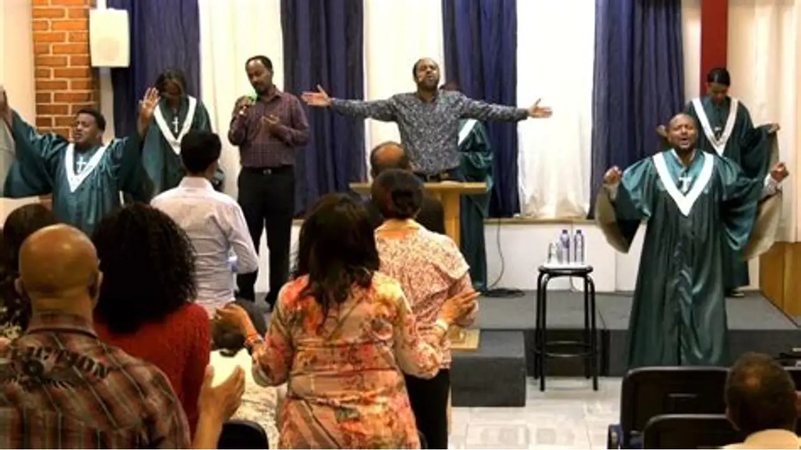

01 · Kids & families
01 · Kids & familiesWonder is a spiritual practice.
Safe, joyful spaces for children and the grownups who love them every Sunday during worship.
Connect with kids ministry01 · Kids & familiesSafe, joyful spaces for children and the grownups who love them every Sunday during worship.
Connect with kids ministry
02 · Worship & musicChoir, band, and a room full of voices singing songs old and new.
Meet the worship team03 · Small groupsNeighborhood fellowship groups, shared meals, and honest conversation throughout the week.
Find your group